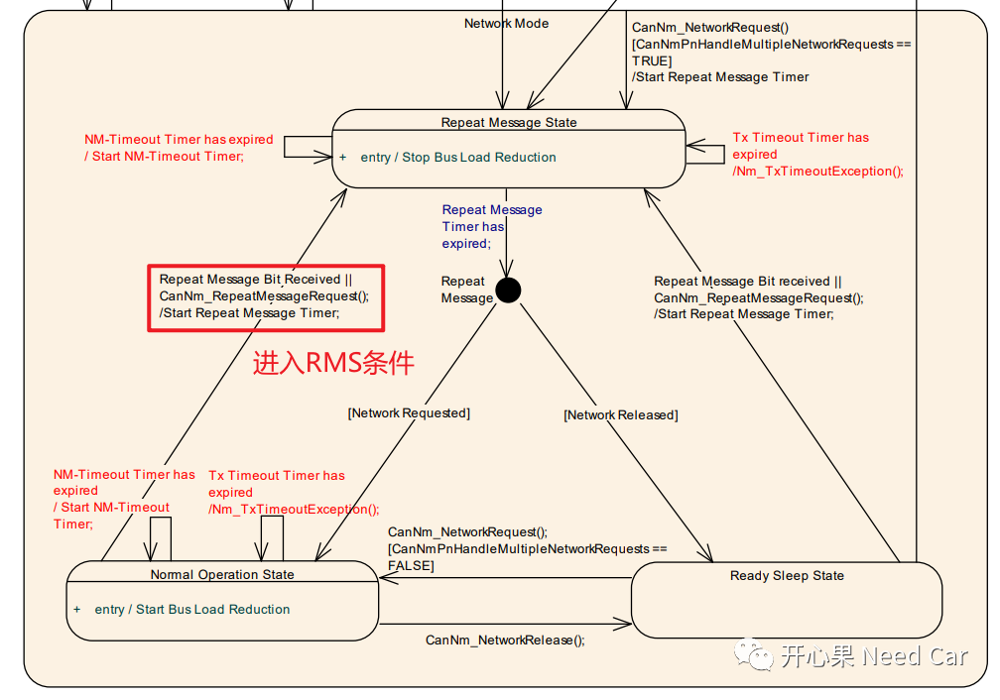
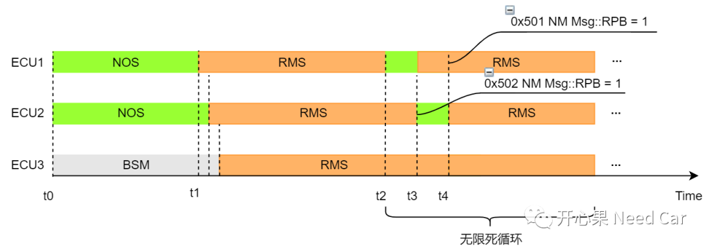
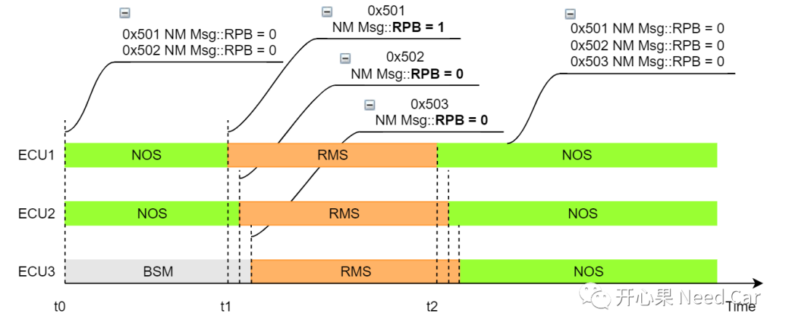

开心果 Need Car · 2022-05-07T18:34:00+08:00 · 微信原文
Autosar网络管理：RepeatMessageRequestBit作用，你清楚吗？一文中，有些表述不够准确，此篇特此勘误。首先要感谢读者@LM、@打工仔的指正。
上文中提到：“t1时刻，ECU2和ECU3发送的网络管理报文中，RPB = 1，且稍微晚于ECU1。”确实表达不准确。
借用@打工仔给出的解释：“CanNM中，只有上层主动请求进入RMS时，才会发送RPB为1的NM报文；由于接收到RPB为1的报文而进入RMS时，发送的RPB仍为上一次的值，不作处理。”
这里再解释一下：由CanNM的状态机可以看出，CanNm_RepeatMessageRequest()接口的主动调用，只能在NOS(Normal Operation State)或者RSS(Ready Sleep State)状态进行调用。
@LM给出的解释：“NOS进入RMS有2种方式，主动需求方需要调用CanNm_RepeatMessageRequest回到RMS，其它节点接收的RPB=1被动回到RMS。”，对应到CanNM的状态机，如下所示：

@LM的进一步思考：“如果被动方RPB=1，会不会造成大家（网段内的所有ECU）都困在RMS状态，ECU1和ECU2、ECU3在RMS发送NM报文有一定的时间差，如果ECU1在超时(CANNM_REPEAT_MESSAGE_TIME)后跳出RMS，但是ECU2，ECU3还在RMS状态下发送RPB=1，ECU1又会被拉回RMS”。
@LM解释了网段内所有ECU被困在RMS状态的原因。按照我之前的错误解释，会导致如下问题：
t2时刻，ECU1脱离RMS状态进入NOS状态；
t3时刻，ECU2脱离RMS之际发送了最后一帧0x502 NM Msg::RPB = 1，此时ECU3还在RMS，收到0x502 NM Msg::RPB = 1，则继续维持在RMS，而ECU1收到0x502 NM Msg::RPB = 1之后，进入RMS；
t4时刻，ECU1发送0x501 NM Msg::RPB = 1，导致ECU2再次进入RMS，所以，ECU1、ECU2、ECU3均被困在了RMS状态。

修改后的状态切换如下所示：

写在最后
往期精彩回顾